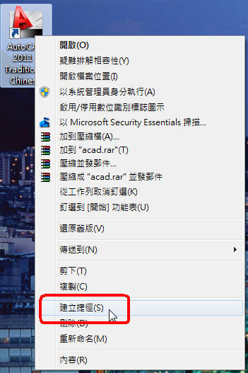
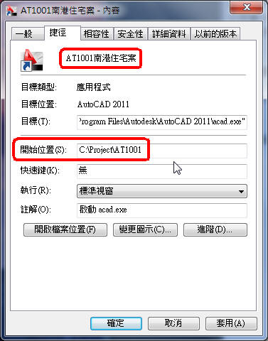

一般公司案子的資料夾規劃，比較典型的就是使用專案編號，也就是使用英數流水號來代表專案!
比如說2010年的第一個案子，命名可以定義為AT1001，看你們公司的業務量以此類推(如下圖)

平常繪圖工作中常常需要開啟您現在負責的專案，常常一個人身上都背著很多案子~
所以呢...常常要記住自己的專案案件編號，每次開圖的時候總要花一些時間找尋資料夾!!
因為案子一大堆路徑通常很多，使用OPEN指令就在那邊點選資料夾，切換來切換去無形中浪費了很多時間~
現在跟各位分享一個小技巧，透過 建立專案捷徑 並指定開圖位置~
專案捷徑可以不只一個，可以把目前手邊的案子都建立專案捷徑!!

點選捷徑按滑鼠右鍵，選擇內容再把你的路徑輸入到開始位置即可，別忘將捷徑更名為你的專案編號~

如果AT1001及AT1005是我目前常用的案子，建立好這二個專案捷徑後~
如此一來在開始工作就先將捷徑打開，這樣開圖可以快速在您需要的位置中顯示，不用在茫茫資料夾中找尋你的專案編號囉~
*在AutoCAD中須先輸入REMEMBERFOLDERS系統變數，將該值改為0，使用開始位置當作檔案選取對話方塊的預設路徑。
REMEMBERFOLDERS系統變數說明：
http://docs.autodesk.com/ACD/2011/CHT/filesACR/WS1a9193826455f5ffa23ce210c4a30acaf-4eb7.htm
延伸閱讀主題：